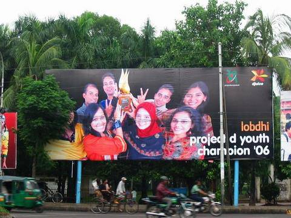

Just another Dude.
ছোট বেলায়, সকালে মক্তব শেষে, গোসল করে, ভাত খেয়ে, জগে করে গরুর দুধ নিয়ে, স্কুলে যাওয়ার পথে, সাজুদার বাপের চায়ের দোকানে দুধ বিক্রি করে, স্কুল শেষে, ফিরার পথে, খালি জগ আর দুধের টাকা নিয়ে, বাসায় ফিরে, বিকেলে বাসায় টিচার কাছে পড়ার পরে, গরুর জন্য ঘাস কেটে, সেটা পুকুরে ধুয়ে, গরুর সামনে দিয়ে, মাগরীব পড়ে, সন্ধ্যায় পড়তে বসতাম। তাই ছোটবেলায় খেলাধুলা তেমন করা হয়নি। বছরে একদিন ঘাস কাটা ফাকি বা টিচার না আসলে, ক্রিকেট বা ব্যাডমিন্টন খেলতে চাইলেও, ওরা আমাকে নিতো না। আমি একটুপরে আবার চলে যাবো বা আমার বোন এসে ডেকে নিয়ে যাবে দেখে। মাঝেমাঝেই, বাড়ির সামনের ক্ষেতের ডাটা শাক, কুমড়া, গাছের নারিকেল বিক্রি করতে বাজারে নিয়ে যেতাম। আম্মু শিখিয়ে দিতেন, এক জোড়া নারিকেলের দাম চাইতে হবে ২০ টাকা তবে কেউ ১৬ টাকা বল্লে দিয়ে দিতে হবে। আর সন্ধ্যে ঘনিয়ে আসলে সেটা ১৪ টাকায় হলেও দিয়ে দিতে হবে।
বুয়েটে লেভেল-২ টার্ম-২ তে থাকা অবস্থায় একটা সাবজেক্ট ছিলো, সলিড মেকানিক্স। মেকানিকেলে সবচেয়ে বেশি যে কয়টা বিষয়ে ফেল করতো তাদের মধ্যে অন্যতম। ক্যামিকেল, এইপিই, মেটালার্জি ডিপার্টমেন্টেও এই সাবজেক্টে ফেলের অবস্থা মোটামুটি একই। ক্লাস টেস্টে গণ হারে শুন্য পেতো, পোলাপান। পরীক্ষার আগের প্রিপারেটরি লিভ এর সময় আমি আর শাকিল ভাবলাম সলিড মেকানিক্সের পুরা বইয়ের সব অঙ্ক সলভ করে ফেল্লে কেমন হয়। যেই কথা সেই কাজ। অলমোস্ট সব সলভ করে ফেল্লাম। তারপর ভাবলাম এইটা বিক্রি করা যায়। মোট ৯০ পাতা এর মত হইছিলো। কিন্তু পোলাপান কিনবে কেন? ওরাতো ৭০ বা ৮০ টাকা দিয়ে ফটোকপি করে ফেলতেই পারে। কি করবো বুঝতে পারতেছিলাম না। শেষমেষ বুদ্ধি বের করলাম, রঙিন এবং কালো কাগজে ফটোকপি করে, বাধাই করে বই আকারে বিক্রি করবো। তাইলে এই রঙ্গিন এবং কালো কাগজ থেকে অন্যরা ফটোকপি করতে পারবে না। কালি খেয়ে পুরাপাতা কালো হয়ে যাবে। ব্যস, বাধাই করে সেই বই বিক্রি করতাম ১৫০ টাকা আমাদের খরচ হইতো ৬৮ টাকা এর মতো। রুয়েট, কুয়েট, চুয়েটে এজেন্টও ছিলো। এজেন্ট বিক্রি করতো ১৭০ টাকায় আর আমাদের কাছ থেকে নগদে কিনে নিতো ১৫০ টাকায়। ৯০ পাতার একটা হাতে লেখা বই, মোটামুটি বাধ্য হয়ে ১৫০ বা ১৭০ টাকায় কিনে, ফটোকপি করতে না পেরে, পোলাপান রাতবিরাতে অশ্রাব্য ভাষায় কবিতা শোনাত। বুয়েট থেকে পাশ করার পরে উইসুফ বুক স্টোরে বইটা বিক্রি করে দেই ২০০৮ সালে। এই বছর দেশে গিয়ে শুনি এখনো সেই বই চলতেছে।
তার আগে, কলেজে, এনালগ ক্যামেরার (DSLR বা ডিজিটাল বা মোবাইল ক্যামেরার পূর্ব পুরুষ) ফিল্ম বিক্রি করে টু পাইস কামাইছিলাম। ইনভেস্টমেন্ট করছিলো কানা বাবু (শুভ্র এর মতো, মোটা পাওয়ারের চশমা ছিলো, তাই এই নাম) ঢাকা থেকে ফিল্ম কিনে, কলেজের হলে বিক্রি করছিলাম। একজনের বুদ্ধি মতে, পিকনিক এর দিনের জন্য ৫টা রেখে দিছিলাম। পিকনিক স্পটে ডিমান্ড ভেরি হাই ছিলো।
মিনিমাম দুইটা টিউশনিতো করতামই, মাঝে মধ্যে তিনটা বা চারটা। ভর্তি পরীক্ষার সিজনে ওমেকাতে ক্লাস নিতাম। ঢাকার বাইরেও যাইতাম ক্লাস নিতে। দুই বছর UCC তেও ক্লাস নিছিলাম।বাসা থেকে টাকা তো নিতামই না বরং ছোট ভাই বোনের খরচ সাপোর্ট দিতাম। কিন্তু এতো কিছুর মধ্যে পড়ালেখা ঠিক মতো করে যেতাম। আইপিই এর ৬ষ্ঠ ব্যাচ ছিলাম আমরা। এই ছয় ব্যাচের মধ্যে আমিই সর্ব প্রথম জিপিএ ৪ এর মধ্যে ৪ পাই। আরো কয়েকবার পাইছিলাম। কম্বাইন্ড ফার্স্ট ছিলাম অনেক দিন। ২০০৭ এ গ্রামীণ ফোনের ডিজুসপ্রজেক্ট ডি ইয়ুথ কম্পিটিশনের ফাইনালে আমাদের টিম, "লব্ধি" ঢাকা উনিভার্সিটির এইবিএ এর "সব্যসাচি" টিম কে হারিয়ে চ্যাম্পিয়ন হয়। সব নিউজ পেপার, টিভিতে সেই খবর, ডেইলি ষ্টার ক্যাম্পাসের মেইন নিউজ। এমনকি কয়েকটা বিলবোর্ডে ছিলো আমাদের ছবি। রুবাবাদ্দৌলা এর সাথে মিটিং ও করছিলাম সেই আমলে !!
লাস্ট সেমিস্টারের আগে, আমি, শাকিল আর কয়েকজনে মিলে ঠিক করলাম বিজনেস করবো। দিলাম কনসালটেন্সি ফার্ম, ECLECTIC নামে। কোন ইভেস্টমেন্ট ছাড়াই হল থেকে বিজনেস শুরু করে দিলাম। শেষ সেমিস্টারে দুইটা কাজও পেয়ে গেলাম। দুই পরীক্ষার গ্যাপে, চিটাগং গিয়ে প্রেজেন্টেশনও দিয়ে আসলাম। এইসব হাবিজাবি করতে গিয়ে লাস্ট সেমিস্টারে আমার রেজাল্ট সবচেয়ে খারাপ হয়। কম্বাইন্ড ফার্স্ট থেকে সেকেন্ড হয়ে যাই।একলাফে সিজিপিএ ৩.৯২ থেকে ৩.৮৭ নেমে গেছে। তারপরেও চাইলে বুয়েটের টিচার হইতে পারতাম সহজেই। কারণ থার্ড, ফোর্থ যারা ছিলো তারা টিচার হিসেবে জয়েন্ট করেছিলো। কিন্তু আমি করলাম না। কারণ, সোজা কাজটা সোজাভাবে করলে, আমি আর আমি থাক্লাম কেম্নে।
